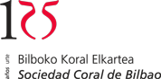
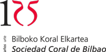

Horarios del autobús:
Salida de Pamplona: 18:30 del Edificio Central.
Llegada: 19:30 en el Kursaal
Salida de San Sebastian: 23:30 del Kursaal.
Llegada: 00:30 al Edificio Central
Cómo apuntarse:
Enviar un correo a: info@concierto-solidario.es o a conciertosolidariodss@gmail.com.
En el correo incluir el nombre, apellidos, teléfono y dirección de e-mail.
Será necesario presentar la entrada o el recibo de haberla comprado en Internet.
Las entradas compradas por Internet se pueden recoger en las taquillas del Kursaal presentando la tarjeta con la que se realizó la compra

 
